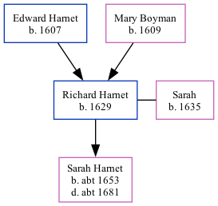

The child of Edward Harnet and Mary BoymanRichard Harnet, the 8 times great-grandfather of Nigel Horne, was born in Thanet, Kent, England in 16291, was baptised in Minster, Thanet, Kent, England on 20 Jul 1629 andhad 1 child, with Sarah: Sarah, .
Kent, England, Tyler Index to Parish Registers, 1538-1874 Online publication - Provo, UT, USA: Ancestry.com Operations, Inc., 2010. This collection was indexed by Ancestry World Archives Project contributors.Original data - Frank Watt Tyler. The Tyler Collection. Canterbury, Kent, England: The Institute of Herald
Family Tree

Map
Generated by ged2site. Last updated on Feb 19, 2025